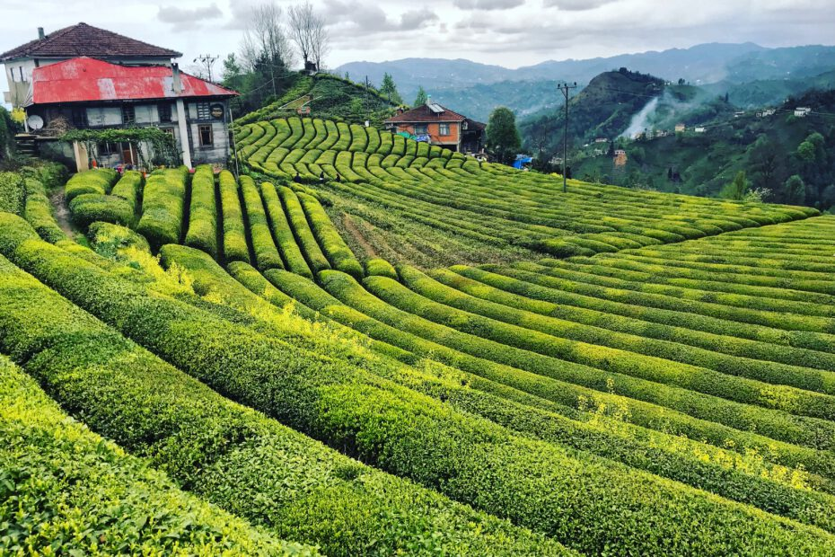
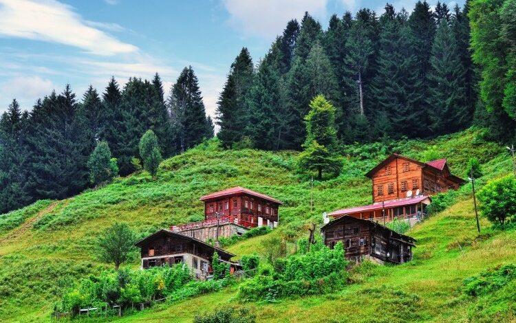
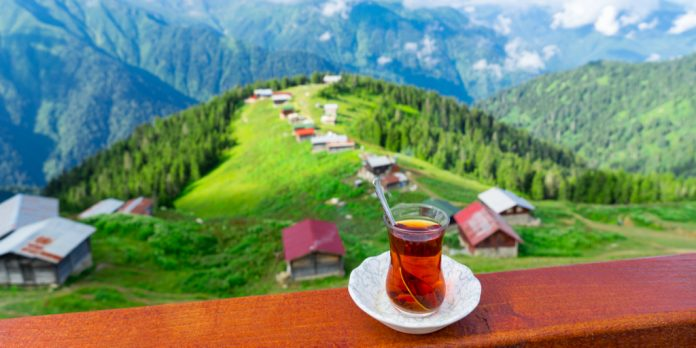
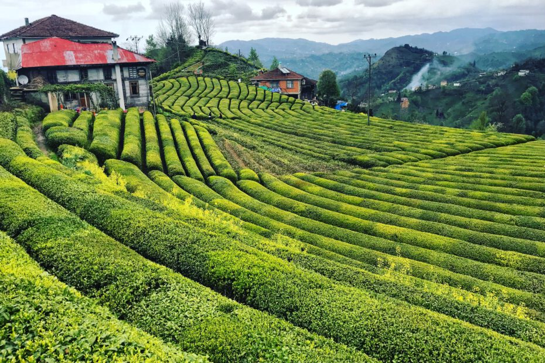
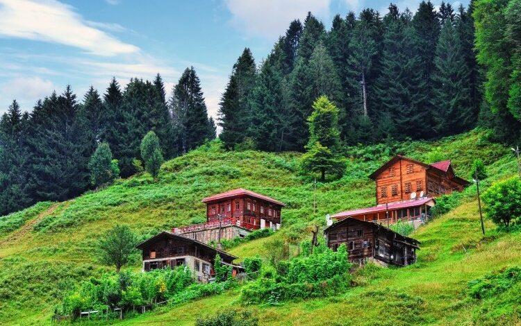
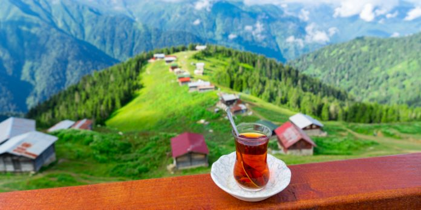

Rize, Karadeniz Bölgesi'nin Doğu Karadeniz bölümünde yer alan Rize ilinin merkezidir. Tarihi Pontus bölgesinin doğusunda kalan Rize, Osmanlı döneminde Lazistan Sancağı'nda yer almıştır. Günümüzde Türkiye'ye bağlıdır.
 




